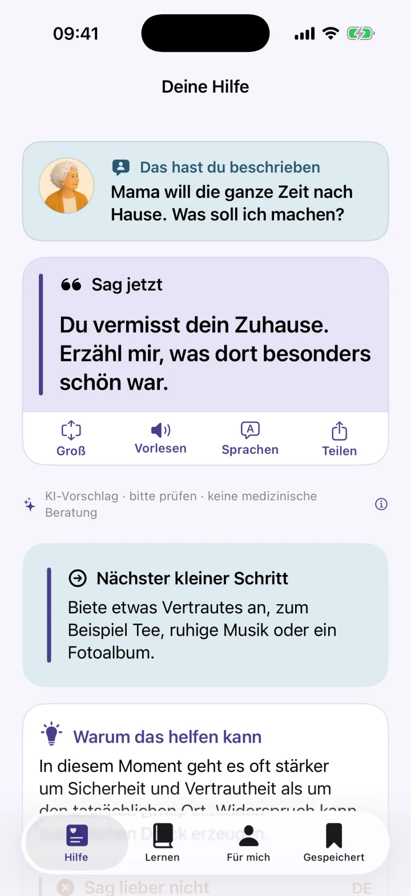
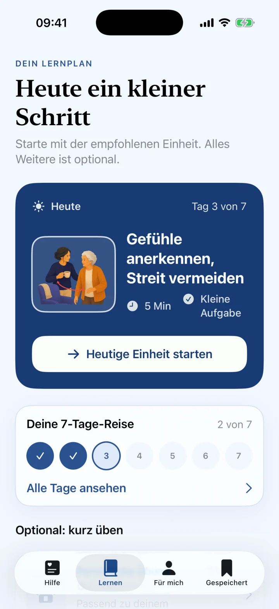
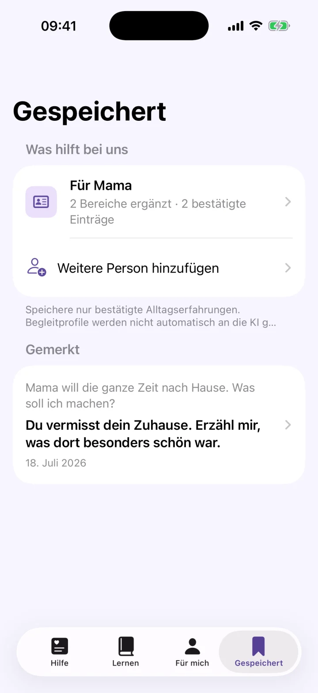

Kommunikation bei Demenz
Vier ruhige Schritte und mögliche Formulierungen für schwierige Gespräche.
Ratgeber lesenRuhige, konkrete Unterstützung für schwierige Demenz-Momente – genau dann, wenn dir selbst die Worte fehlen.

Kein medizinischer Fachjargon
Keine komplizierte Navigation
Ein klarer nächster Schritt
Unveränderte Screenshots aus der deutschen iPhone-App – von der Situation bis zum persönlichen Lernplan.




Schreibe in ein oder zwei Sätzen, was gerade passiert.
Du bekommst eine konkrete Formulierung zum Prüfen. Beobachte, ob sie für die Person und den Moment passt.
Ein verständlicher nächster Schritt hilft dir, ruhig zu handeln.
Demenz Coach hilft dir, mögliche Gefühle oder Bedürfnisse vorsichtig zu berücksichtigen, unnötigen Widerspruch zu vermeiden und einen ruhigen nächsten Schritt zu prüfen.

Kurze, quellenbasierte Antworten zuerst – die App ist ein optionaler nächster Schritt.
Vier ruhige Schritte und mögliche Formulierungen für schwierige Gespräche.
Ratgeber lesenWas du sagen kannst, ohne über den Ort oder Erinnerungen zu streiten.
Ratgeber lesenEin kurzer Sicherheits- und Entlastungsplan für pflegende Angehörige.
Ratgeber lesenDu musst nicht immer sofort die perfekte Antwort wissen. Manchmal reicht ein ruhiger Satz und ein kleiner nächster Schritt.
Die Haltung hinter Demenz Coach
Demenz Coach ist bewusst einfach gehalten und unterstützt Angehörige bei Kommunikation und Orientierung.
Nein. Demenz Coach ist ein Kommunikations- und Angehörigen-Coach. Die App stellt keine Diagnosen und gibt keine Empfehlungen zu Medikamenten.
Ja. Hilfreiche Sätze kannst du merken und später schnell wiederfinden.
Nein. Bei unmittelbarer Gefahr oder einem medizinischen Notfall wende dich bitte sofort an die örtliche Notfallhilfe.
Entdecke ruhige, konkrete Unterstützung für deinen Pflegealltag.